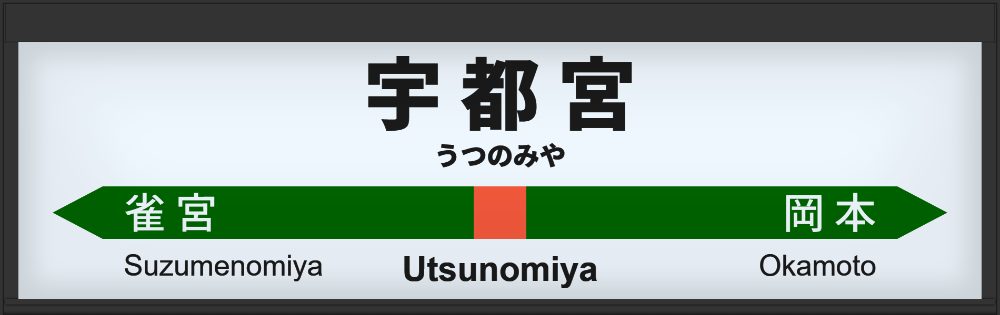

| ←雀宮 | ■ 宇都宮線 | 岡本→ |
|---|
1992年12月に通称初期型ATOS放送を導入する。全ホームが向山佳衣子氏担当。初期は詳細だったが、のち簡易放送になる。
2005年10月には常磐初期型ATOS放送を導入する。7・10番線が津田英治氏になる。
2014年11月には宇都宮改良型に更新。
2019年3月に宇都宮改良型に更新される。7・10番線の声優が田中一永氏になる。
| 7 | ■ 宇都宮線 上野方面 盛岡方面 |
7番線次発予告 7番線接近放送（寝台特急 エルム 札幌行） 7番線接近放送（特別急行 仙台行） |
初期型でした。 |
|---|---|---|---|
| 8 | ■ 宇都宮線 上野方面 盛岡方面 |
8番線次発予告 8番線接近放送 |
初期型でした。 |
| 9 | ■ 宇都宮線 上野方面 盛岡方面 |
9番線次発予告 9番線接近放送 |
初期型でした。 |
| 10 | ■ 宇都宮線 上野方面 盛岡方面 |
10番線次発予告 10番線接近放送 |
初期型でした。 |